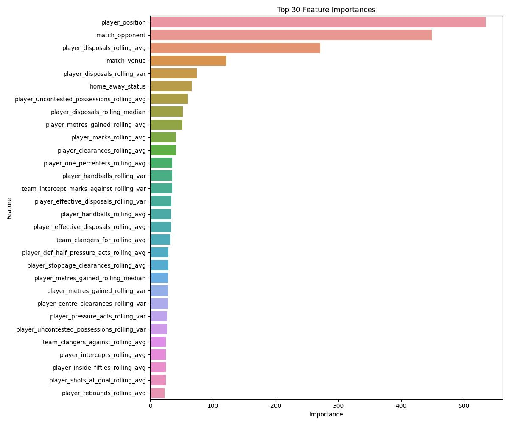

AFL Player Disposals Tutorial
There are many possible ways to bet on an AFL match. Whilst Handicaps, Total Points and Match Odds have long been the traditional ways to bet into AFL markets, 'Player Proposition' bets have become the next big thing in AFL wagering. Traditionally, Same Game Multis will have options to pick players to have at least XX disposals, however 'Player Disposal Line' markets have quickly shot-up to be the next biggest market on the Betfair Exchange with regards to AFL.
A player disposal line will be set at XX.5 disposals which, in theory, has a 50% chance of being over or under the true disposal prediction. The punter then needs to decide when they think the line is right or not, and take a position on either side. This tutorial here will outline how we can use data freely available online to generate predictions for player disposals.
AFL Data is made available from the R package fitzRoy which requires installation of R and use of the Python R-emulator 'rpy2'. (Direct R code can also be used.) This package pulls data from four separate sites which all have similar data with only a few columns differing between each, however due to the differing ways these sources display team and player names, matching between them can be painful. For the purposes of this tutorial we will use the 'fryzigg' function in fitzRoy which pulls data from Squiggle, a renowned site for AFL modellers.
Requirements
- A code editor with Jupyter Notebook functionality (e.g. VS Code)
- Python and R installations
Downloading Historic Data
import os
import rpy2.situation
import rpy2.robjects as robjects
from rpy2.robjects.packages import importr
import pandas as pd
# Set the R_HOME environment variable to the path of your R installation
# NOTE: You must have your R installation saved to your system PATH
os.environ['R_HOME'] = 'C:/Users/username/AppData/Local/Programs/R/R-43~1.0'
print(os.environ['R_HOME'])
# Load the necessary R packages
# These must be installed to your R installation first
fitzRoy = importr('fitzRoy')
dplyr = importr('dplyr')
seasons = []
for i in range(2012,2024,1):
seasons.append(i)
print(seasons)
api_queries = [
#'footywire',
'fryzigg',
#'afl',
#'afltables'
]
for api in api_queries:
# Initialize an empty dataframe for storing the data
robjects.r('this_season <- data.frame()')
# Loop through each season and fetch the data
for season in seasons:
query = 'fetch_player_stats_'+api
data = getattr(fitzRoy, query)(season=season, round_number=robjects.NULL)
robjects.globalenv['data'] = data
robjects.r('this_season <- dplyr::bind_rows(this_season, data)')
# Retrieve the combined dataframe from R
this_season = robjects.r('this_season')
# Extract column names
column_names = list(this_season.colnames)
# Convert the R dataframe to a pandas dataframe
this_season_df = pd.DataFrame(robjects.conversion.rpy2py(this_season))
# Transpose the dataframe
this_season_df = this_season_df.T
# Set the correct column headers
this_season_df.columns = column_names
# Reset the index
this_season_df.reset_index(drop=True, inplace=True)
# Inspect the dataframe to ensure it's correctly oriented and headers are set
print(this_season_df.head())
# Save the dataframe to a CSV file
this_season_df.to_csv(api+'.csv', index=False)
This is the R code to do the same function for fryzigg
library(fitzRoy)
library(dplyr)
seasons <- 2012:2024
this_season <- NULL
for (season in seasons) {
data <- fitzRoy::fetch_player_stats_fryzigg(season = season)
this_season <- dplyr::bind_rows(this_season, data)
}
write.csv(this_season,'fryzigg.csv')
Processing the data
Here we will load our csv file from the fryzigg function into a pandas dataframe for processing.
import pandas as pd
import warnings
from tqdm import tqdm
from datetime import datetime
warnings.filterwarnings("ignore", category=pd.errors.PerformanceWarning)
warnings.filterwarnings("ignore", category=pd.errors.SettingWithCopyWarning)
warnings.filterwarnings("ignore", category=RuntimeWarning)
afl_data = pd.read_csv('fryzigg.csv',low_memory=False)
afl_data = afl_data[[
'venue_name',
'match_id',
'match_home_team',
'match_away_team',
'match_date',
'match_round',
'match_home_team_score',
'match_away_team_score',
'match_margin',
'match_winner',
'match_weather_temp_c',
'match_weather_type',
'player_id',
'player_first_name',
'player_last_name',
'player_team',
'kicks',
'marks',
'handballs',
'disposals',
'effective_disposals',
'disposal_efficiency_percentage',
'goals',
'behinds',
'hitouts',
'tackles',
'rebounds',
'inside_fifties',
'clearances',
'clangers',
'free_kicks_for',
'free_kicks_against',
'contested_possessions',
'uncontested_possessions',
'contested_marks',
'marks_inside_fifty',
'one_percenters',
'bounces',
'goal_assists',
'time_on_ground_percentage',
'afl_fantasy_score',
'centre_clearances',
'stoppage_clearances',
'score_involvements',
'metres_gained',
'turnovers',
'intercepts',
'tackles_inside_fifty',
'contest_def_losses',
'contest_def_one_on_ones',
'contest_off_one_on_ones',
'contest_off_wins',
'def_half_pressure_acts',
'effective_kicks',
'f50_ground_ball_gets',
'ground_ball_gets',
'hitouts_to_advantage',
'intercept_marks',
'marks_on_lead',
'pressure_acts',
'rating_points',
'ruck_contests',
'score_launches',
'shots_at_goal',
'spoils'
]]
# This creates an unedited copy of the dataframe that will be used for calculating player level data
player_data = afl_data.copy()
All the data here is split out by player, however, it is clear to anyone that watches AFL, a player's disposal count very much depends on the performance of the whole team. A defender will get a higher number of disposals if the team concedes a lot of forward 50 entries and a lower number if they don't. Here we will apply some functions to group this data by team, both for and against, and then concatenate it with the players individual data before we generate our features ready for training
afl_data.rename(columns={'venue_name':'match_venue'}, inplace=True)
# List of columns to calculate the sum for
columns_to_sum = ['kicks', 'marks', 'handballs', 'disposals', 'effective_disposals', 'hitouts', 'tackles', 'rebounds', 'inside_fifties', 'clearances', 'clangers', 'free_kicks_for', 'free_kicks_against', 'contested_possessions', 'uncontested_possessions', 'contested_marks', 'marks_inside_fifty', 'one_percenters', 'bounces', 'goal_assists', 'centre_clearances', 'stoppage_clearances', 'score_involvements', 'metres_gained', 'turnovers', 'intercepts', 'tackles_inside_fifty', 'contest_def_losses', 'contest_def_one_on_ones', 'contest_off_one_on_ones', 'contest_off_wins', 'def_half_pressure_acts', 'effective_kicks', 'f50_ground_ball_gets', 'ground_ball_gets', 'hitouts_to_advantage', 'intercept_marks', 'marks_on_lead', 'pressure_acts', 'score_launches', 'shots_at_goal', 'spoils']
# Calculate sum for each column separately
sum_by_column = {}
for column in columns_to_sum:
sum_by_column[column] = afl_data.groupby(['match_id', 'player_team'])[column].sum()
# Convert the dictionary to DataFrame
sum_df = pd.DataFrame(sum_by_column)
sum_df = sum_df.add_prefix('team_')
team_data = afl_data[[
'match_venue',
'match_id',
'player_team',
'match_date',
'match_round',
'match_winner',
'match_home_team_score',
'match_away_team_score',
'match_margin',
'match_weather_temp_c',
'match_weather_type',
'match_home_team',
'match_away_team'
]]
team_data = team_data.drop_duplicates()
team_data = pd.merge(team_data,sum_df,how='left',on=['match_id','player_team'])
def home_away(row):
if row['match_away_team'] == row['player_team']:
return 'AWAY'
else:
return 'HOME'
team_data['home_away'] = team_data.apply(home_away, axis=1)
team_data.drop(columns=['player_team'],inplace=True)
home_team_data_score_data = team_data[team_data['home_away'] == 'HOME']
# Add suffix '_against' to column names that do not begin with 'match_'
for col in home_team_data_score_data.columns:
if not col.startswith('match_'):
home_team_data_score_data.rename(columns={col: col + '_for'}, inplace=True)
home_team_data_concede_data = team_data[team_data['home_away'] == 'AWAY']
home_team_data_concede_data.drop(columns=['match_venue',
'match_date',
'match_round',
'match_winner',
'match_home_team_score',
'match_away_team_score',
'match_margin',
'match_weather_temp_c',
'match_weather_type',
'home_away'],inplace=True)
# Add suffix '_against' to column names that do not begin with 'match_'
for col in home_team_data_concede_data.columns:
if not col.startswith('match_'):
home_team_data_concede_data.rename(columns={col: col + '_against'}, inplace=True)
home_team_data = pd.merge(home_team_data_score_data,home_team_data_concede_data,how='left',on=['match_id','match_home_team','match_away_team'])
home_team_data.rename(columns={'match_home_team_score':'team_points_for',
'match_away_team_score':'team_points_against',
'match_home_team':'match_team',
'match_away_team':'match_opponent'}, inplace= True)
away_team_data_score_data = team_data[team_data['home_away'] == 'AWAY']
# Add suffix '_against' to column names that do not begin with 'match_'
for col in away_team_data_score_data.columns:
if not col.startswith('match_'):
away_team_data_score_data.rename(columns={col: col + '_for'}, inplace=True)
away_team_data_concede_data = team_data[team_data['home_away'] == 'HOME']
away_team_data_concede_data.drop(columns=['match_venue',
'match_date',
'match_round',
'match_winner',
'match_home_team_score',
'match_away_team_score',
'match_margin',
'match_weather_temp_c',
'match_weather_type',
'home_away'],inplace=True)
# Add suffix '_against' to column names that do not begin with 'match_'
for col in away_team_data_concede_data.columns:
if not col.startswith('match_'):
away_team_data_concede_data.rename(columns={col: col + '_against'}, inplace=True)
away_team_data = pd.merge(away_team_data_score_data,away_team_data_concede_data,how='left',on=['match_id','match_home_team','match_away_team'])
away_team_data.rename(columns={'match_home_team_score':'team_points_against',
'match_away_team_score':'team_points_for',
'match_home_team':'match_opponent',
'match_away_team':'match_team'}, inplace= True)
afl_data = pd.concat([home_team_data,away_team_data])
afl_data = afl_data[afl_data['team_spoils_for'] > 0]
afl_data['team_margin'] = afl_data['team_points_for'] - afl_data['team_points_against']
stat_names = set('_'.join(col.split('_')[1:-1]) for col in afl_data.columns if col.startswith('team_') and (col.endswith('_for') or col.endswith('_against')))
# Calculate the difference and create new columns
for stat in stat_names:
for_or_against = ['for', 'against']
for col_suffix in for_or_against:
col_name = f'team_{stat}_{col_suffix}'
if col_name in afl_data.columns:
for_or_against_value = afl_data[f'team_{stat}_{col_suffix}']
against_col_name = f'team_{stat}_against' if col_suffix == 'for' else f'team_{stat}_for'
against_value = afl_data[against_col_name]
diff_col_name = f'team_{stat}_diff'
afl_data[diff_col_name] = for_or_against_value - against_value
afl_data.to_csv('afl_data.csv',index=False)
Home Ground Advantage
The next section here will be very prescriptive in how we define home ground advantage and neutral grounds. There are instances where a team will play another team at a venue that they both share as home ground and so true home ground advantage is lost (i.e. Richmond v Collingwood at the MCG), and so it may make sense for the purposes of the model to define both of these teams as being home teams (in terms of crowd, travel and ground dimensions). Additionally, we will define a function that calls out as neutral grounds for which neither team is a traditional home team for the venue(e.g. Geelong v Western Bulldogs at the Adelaide Oval).
# Provided dictionary of teams and their venues
teams_venues = {
'Adelaide': ['Football Park', 'Adelaide Oval'],
'Port Adelaide': ['Football Park', 'Adelaide Oval'],
'Brisbane Lions': ['Metricon Stadium', 'Gabba'],
'Gold Coast': ['Metricon Stadium', 'Gabba','TIO Stadium'],
'Greater Western Sydney': ['ANZ Stadium', 'GIANTS Stadium', 'UNSW Canberra Oval', 'SCG'],
'Sydney': ['ANZ Stadium', 'GIANTS Stadium', 'SCG'],
'West Coast': ['Optus Stadium', 'Subiaco'],
'Fremantle': ['Optus Stadium', 'Subiaco'],
'Geelong': ['GMHBA Stadium', 'MCG', 'Marvel Stadium'],
'Carlton': ['MCG', 'Marvel Stadium'],
'Collingwood': ['MCG', 'Marvel Stadium'],
'Essendon': ['MCG', 'Marvel Stadium'],
'Hawthorn': ['MCG', 'Marvel Stadium'],
'Melbourne': ['MCG', 'Marvel Stadium'],
'North Melbourne': ['MCG', 'Marvel Stadium'],
'Richmond': ['MCG', 'Marvel Stadium'],
'St Kilda': ['MCG', 'Marvel Stadium'],
'Western Bulldogs': ['MCG', 'Marvel Stadium']
}
# Update 'home_away_for' column based on conditions
for index, row in afl_data.iterrows():
if row['home_away_for'] == 'AWAY' and row['match_venue'] in teams_venues.get(row['match_team'], []):
afl_data.at[index, 'home_away_for'] = 'HOME'
# Provided dictionary of venues and their associated teams
venues_teams = {
'University of Tasmania Stadium': ['Hawthorn'],
'UNSW Canberra Oval': ['Greater Western Sydney'],
'GMHBA Stadium': ['Geelong'],
'Blundstone Arena': ['North Melbourne'],
'SCG': ['Greater Western Sydney', 'Sydney'],
'Gabba': ['Brisbane Lions', 'Gold Coast'],
'ANZ Stadium': ['Greater Western Sydney', 'Sydney'],
'MCG': ['Carlton', 'Collingwood', 'Essendon', 'Geelong', 'Hawthorn', 'Melbourne', 'North Melbourne', 'Richmond', 'St Kilda', 'Western Bulldogs'],
'Marvel Stadium': ['Carlton', 'Collingwood', 'Essendon', 'Geelong', 'Hawthorn', 'Melbourne', 'North Melbourne', 'Richmond', 'St Kilda', 'Western Bulldogs'],
'Metricon Stadium': ['Brisbane Lions', 'Gold Coast'],
'Subiaco': ['West Coast', 'Fremantle'],
'Optus Stadium': ['West Coast', 'Fremantle'],
'Football Park': ['Adelaide', 'Port Adelaide'],
'Adelaide Oval': ['Adelaide', 'Port Adelaide'],
'GIANTS Stadium': ['Greater Western Sydney'],
'Mars Stadium': ['Western Bulldogs'],
'TIO Stadium' : ['Gold Coast']
}
# Update 'home_away_for' column based on conditions
for index, row in afl_data.iterrows():
if row['match_team'] not in venues_teams.get(row['match_venue'], []) and row['match_opponent'] not in venues_teams.get(row['match_venue'], []):
afl_data.at[index, 'home_away_for'] = 'NEUTRAL'
Creating rolling team and player windows
Let's create rolling windows for our team stats based on the last 10 matches and player stats for the last 5 matches. We'll then combine all this data ready for our algorithm
# Sort the DataFrame by 'match_team' alphabetically and 'match_id' ascending
afl_data_sorted = afl_data.sort_values(by=['match_team', 'match_id'])
rolling_team_columns = []
# Identify columns that start with 'team'
team_columns = [col for col in afl_data_sorted.columns if col.startswith('team')]
# Calculate rolling average for the last ten match_ids for each match_team, excluding the current match_id
def rolling_average_excluding_current(group):
for col in team_columns:
group[f'{col}_rolling_avg'] = group[col].shift(1).rolling(window=10, min_periods=10).mean()
group[f'{col}_rolling_var'] = group[col].shift(1).rolling(window=10, min_periods=10).var()
group[f'{col}_rolling_std'] = group[col].shift(1).rolling(window=10, min_periods=10).std()
group[f'{col}_rolling_median'] = group[col].shift(1).rolling(window=10, min_periods=10).median()
return group
# Apply the rolling average function to each group of 'match_team'
afl_data_rolling_avg = afl_data_sorted.groupby('match_team').apply(rolling_average_excluding_current)
team_rolling_columns_avg = [col for col in afl_data_rolling_avg.columns if 'rolling' in col]
player_data = player_data[[
'match_id',
'player_id',
'player_first_name',
'player_last_name',
'player_position',
'guernsey_number',
'player_team'
] + columns_to_sum]
player_data_sorted = player_data.sort_values(by=['player_id', 'match_id'])
# Calculate rolling statistics for the last five match_ids for each player, excluding the current match_id
def rolling_player_excluding_current(group):
for col in columns_to_sum:
group[f'player_{col}_rolling_avg'] = group[col].shift(1).rolling(window=5, min_periods=1).mean()
group[f'player_{col}_rolling_var'] = group[col].shift(1).rolling(window=5, min_periods=1).var()
group[f'player_{col}_rolling_std'] = group[col].shift(1).rolling(window=5, min_periods=1).std()
group[f'player_{col}_rolling_median'] = group[col].shift(1).rolling(window=5, min_periods=1).median()
return group
# Get total number of player_id groups
total_groups = len(player_data_sorted['player_id'].unique())
# Apply rolling statistics function to each group of 'player_id' with tqdm progress bar
tqdm.pandas(desc="Processing player_ids", total=total_groups)
player_data_rolling = player_data_sorted.groupby('player_id').progress_apply(rolling_player_excluding_current)
player_rolling_columns_avg = [col for col in player_data_rolling.columns if 'rolling' in col]
player_data_rolling = player_data_rolling.reset_index(drop=True)
afl_data_rolling_avg = afl_data_rolling_avg.reset_index(drop=True)
dataset = pd.merge(player_data_rolling,afl_data_rolling_avg,how='left',left_on=['match_id','player_team'],right_on=['match_id','match_team'])
dataset = dataset[[
'match_id',
'match_date',
'match_round',
'match_team',
'match_opponent',
'match_venue',
'home_away_status',
'player_id',
'player_first_name',
'player_last_name',
'player_position',
'guernsey_number',
'disposals'
] + team_rolling_columns_avg + player_rolling_columns_avg]
# Discard 2012 data so that each team has a full rolling window of 10 matches available
dataset = dataset[dataset['match_date'] >= '2013-01-01']
# Fill any missing data with 0
dataset = dataset.fillna(0)
dataset['match_date'] = pd.to_datetime(dataset['match_date'], format='%d/%m/%Y')
today_date = datetime.today().date()
new_data = dataset[dataset['match_date'].dt.date >= today_date]
print(new_data.head())
dataset.to_csv('dataset.csv',index=False)
match_id match_date match_round match_team match_opponent \
0 13965 2012-03-31 1 Essendon North Melbourne
1 13970 2012-04-07 2 Essendon Port Adelaide
3 13988 2012-04-21 4 Essendon Carlton
4 13996 2012-04-25 5 Essendon Collingwood
5 14006 2012-05-05 6 Essendon Brisbane Lions
match_venue home_away_status player_id player_first_name \
0 Marvel Stadium HOME 10398 Dustin
1 Marvel Stadium HOME 10398 Dustin
3 MCG HOME 10398 Dustin
4 MCG HOME 10398 Dustin
5 Marvel Stadium HOME 10398 Dustin
player_last_name ... player_score_launches_rolling_std \
0 Fletcher ... 0.000000
1 Fletcher ... 0.000000
3 Fletcher ... 2.645751
4 Fletcher ... 2.380476
5 Fletcher ... 2.073644
player_score_launches_rolling_median player_shots_at_goal_rolling_avg \
0 0.0 0.00
1 0.0 0.00
3 4.0 0.00
4 2.5 0.25
5 2.0 0.20
player_shots_at_goal_rolling_var player_shots_at_goal_rolling_std \
0 0.00 0.000000
1 0.00 0.000000
3 0.00 0.000000
4 0.25 0.500000
5 0.20 0.447214
player_shots_at_goal_rolling_median player_spoils_rolling_avg \
0 0.0 0.00
1 0.0 6.00
3 0.0 7.00
4 0.0 5.25
5 0.0 5.20
player_spoils_rolling_var player_spoils_rolling_std \
0 0.000000 0.000000
1 0.000000 0.000000
3 1.000000 1.000000
4 12.916667 3.593976
5 9.700000 3.114482
player_spoils_rolling_median
0 0.0
1 6.0
3 7.0
4 6.5
5 6.0
[5 rows x 701 columns]
Model Training
Let's now apply our LGBM model to this pre-processed data to create our pickle file
import pandas as pd
from lightgbm import LGBMRegressor
from datetime import datetime
from dateutil.relativedelta import relativedelta
import pickle
from sklearn.model_selection import GridSearchCV
final_dataset = dataset.copy()
categorical_columns = ['match_opponent', 'match_venue', 'home_away_status', 'player_position']
feature_columns = team_rolling_columns_avg + player_rolling_columns_avg + categorical_columns
# Common models parameters
verbose = 0
learning_rate = 0.1
n_estimators = 500
def train_test_split(final_dataset, end_date):
'''
This function splits the dataset into a training set and a test set for the purposes of model training.
This is to enable testing of the trained model on an unseen test set to establish statistical metrics regarding its accuracy.
'''
final_dataset['match_date'] = pd.to_datetime(final_dataset['match_date'], format='%Y-%m-%d').dt.tz_localize(None)
# Split the data into train and test data
train_data = final_dataset[final_dataset['match_date'] < end_date - relativedelta(years=2)].reset_index(drop=True)
test_data = final_dataset[(final_dataset['match_date'] >= end_date - relativedelta(years=2)) & (final_dataset['match_date'] < end_date)].reset_index(drop=True)
return test_data, train_data
test_data, train_data = train_test_split(final_dataset, datetime.today())
def generate_xy(test_data, train_data, feature_cols):
'''
This function separates the target column 'disposals' from the actual features of the dataset and also separates the training features from the race metadata which is not being used for the training (e.g. raceId)
'''
train_x, train_y = train_data[feature_cols], train_data['disposals']
test_x, test_y = test_data[feature_cols], test_data['disposals']
return train_x, train_y, test_x, test_y
train_x, train_y, test_x, test_y = generate_xy(test_data, train_data, feature_columns)
# Convert categorical columns to 'category' type
for col in categorical_columns:
train_x[col] = train_x[col].astype('category')
test_x[col] = test_x[col].astype('category')
# Define parameter grid for LGBMRegressor
param_grid = {
'learning_rate': [0.01, 0.05, 0.1],
'n_estimators': [100, 200, 500],
'num_leaves': [31, 80, 127],
'max_depth': [-1, 10, 20, 30],
'subsample': [0.7, 0.8, 0.9, 1.0]
}
def LGBM_GridSearch(train_x, train_y, categorical_feature_indices):
# Initialize LGBMRegressor
lgbm = LGBMRegressor(force_col_wise=True, verbose=-1)
# Initialize GridSearchCV
grid_search = GridSearchCV(estimator=lgbm, param_grid=param_grid, cv=5, scoring='neg_mean_squared_error', n_jobs=-1)
# Fit GridSearchCV
grid_search.fit(train_x, train_y, categorical_feature=categorical_feature_indices)
# Print results
print("GridSearchCV Results:")
print("Best parameters found:", grid_search.best_params_)
print("Best negative mean squared error found:", grid_search.best_score_)
lgbm_best_params = grid_search.best_params_
return lgbm_best_params
categorical_feature_indices = [train_x.columns.get_loc(col) for col in categorical_columns]
lgbm_best_params = LGBM_GridSearch(train_x, train_y, categorical_feature_indices)
def apply_best_GridSearch_params(lgbm_best_params, train_x, train_y):
'''
This function takes the previously defined best parameters, trains the model using those parameters and then outputs the pickle file.
'''
# Define the model with best parameters
best_model = LGBMRegressor(force_col_wise=True, verbose=-1, n_estimators=lgbm_best_params['n_estimators'], learning_rate=lgbm_best_params['learning_rate'], num_leaves=lgbm_best_params['num_leaves'])
# Train the model on best parameters
best_model.fit(train_x, train_y, categorical_feature=categorical_feature_indices)
# Dump the pickle for the best model
with open('best_lgbm_model.pickle', 'wb') as f:
pickle.dump(best_model, f)
return best_model
best_model = apply_best_GridSearch_params(lgbm_best_params, train_x, train_y)
BACKTESTING_COLUMNS = ['match_id',
'match_date',
'match_round',
'match_team',
'match_opponent',
'match_venue',
'home_away_status',
'player_id',
'player_first_name',
'player_last_name',
'guernsey_number',
'disposals']
def best_model_predictions(best_model, test_data, test_x, output_file='lgbm_gridSearch_predictions.csv'):
'''
This function uses the best model to make predictions on the test data, adds the predictions as a column, and exports the predictions to a CSV file.
'''
# Predict using the best model
test_data['disposals_prediction'] = best_model.predict(test_x)
# Keep only required columns
export_columns = BACKTESTING_COLUMNS + ['disposals_prediction']
result_data = test_data[export_columns]
# Export DataFrame to CSV
result_data.to_csv(output_file, index=False)
return result_data
# Example usage: Export predictions with disposals prediction as a column
test_data = best_model_predictions(best_model, test_data, test_x)
GridSearchCV Results:
Best parameters found: {'learning_rate': 0.05, 'max_depth': 10, 'n_estimators': 200, 'num_leaves': 31, 'subsample': 0.7}
Best negative mean squared error found: -25.38659078300869
Graphing feature importance
import matplotlib.pyplot as plt
import seaborn as sns
def plot_feature_importance(model, feature_columns, top_n=30, output_file='feature_importance.jpg'):
'''
This function plots the feature importance of the trained model.
'''
# Get feature importances
feature_importances = model.feature_importances_
# Create a DataFrame for better visualization
importance_df = pd.DataFrame({'Feature': feature_columns, 'Importance': feature_importances})
importance_df = importance_df.sort_values(by='Importance', ascending=False).head(top_n)
# Plot the feature importances
plt.figure(figsize=(12, 10))
sns.barplot(x='Importance', y='Feature', data=importance_df)
plt.title('Top 30 Feature Importances')
plt.tight_layout()
# Save the plot as a .jpg file
plt.savefig(output_file, format='jpg')
plt.show()
# Plot feature importance for the best model and save as .jpg
plot_feature_importance(best_model, feature_columns)

Creating new ratings
Let's fetch upcoming lineups first
for (season in seasons) {
# Remember to change the round as required
data <- fitzRoy::fetch_lineup(season = season, round_number = 17)
this_season <- dplyr::bind_rows(this_season, data)
}
write.csv(this_season,'lineup.csv')
import pandas as pd
from datetime import datetime, timedelta
# Load the CSV file
fryzigg = pd.read_csv('fryzigg.csv',low_memory=False)
# Convert 'match_date' to datetime format if it's not already
fryzigg['match_date'] = pd.to_datetime(fryzigg['match_date'],dayfirst=True)
# Filter for match_date within the last 2 years
two_years_ago = datetime.now() - timedelta(days=2*365)
filtered_fryzigg = fryzigg[fryzigg['match_date'] >= two_years_ago]
# Create the player_ids DataFrame with unique combinations
player_ids = filtered_fryzigg[['player_id', 'player_first_name', 'player_last_name', 'player_team', 'guernsey_number']].drop_duplicates()
# Load the CSV file
lineup = pd.read_csv('lineup.csv')
# Provided dictionary for team name replacements
teams_dict = {
'Adelaide Crows': 'Adelaide',
'Brisbane Lions': 'Brisbane Lions',
'Carlton': 'Carlton',
'Collingwood': 'Collingwood',
'Essendon': 'Essendon',
'Fremantle': 'Fremantle',
'Geelong Cats': 'Geelong',
'Gold Coast SUNS': 'Gold Coast',
'GWS GIANTS': 'Greater Western Sydney',
'Hawthorn': 'Hawthorn',
'Melbourne': 'Melbourne',
'North Melbourne': 'North Melbourne',
'Port Adelaide': 'Port Adelaide',
'Richmond': 'Richmond',
'St Kilda': 'St Kilda',
'Sydney Swans': 'Sydney',
'West Coast Eagles': 'West Coast',
'Western Bulldogs': 'Western Bulldogs'
}
# Replace the values in the teamName column
lineup['teamName'] = lineup['teamName'].replace(teams_dict)
# Extract only the date part from utcStartTime column and format it
lineup['utcStartTime'] = lineup['utcStartTime'].str.split('T').str[0]
lineup['utcStartTime'] = pd.to_datetime(lineup['utcStartTime']).dt.strftime('%Y-%m-%d %h:%m%s')
# Create 'away_teams' DataFrame
away_teams = lineup[lineup['teamType'] == 'away'][['providerId', 'teamName']].drop_duplicates()
away_teams.rename(columns={'teamName': 'match_away_team'}, inplace=True)
# Generate new 'match_id' values for away_teams starting from max_match_id + 1
max_match_id = fryzigg['match_id'].max()
num_rows = len(away_teams)
new_match_ids = list(range(max_match_id + 1, max_match_id + 1 + num_rows))
# Add 'match_id' column to away_teams with the new values
away_teams['match_id'] = new_match_ids
# Create 'home_teams' DataFrame
home_teams = lineup[lineup['teamType'] == 'home'][['providerId', 'teamName']].drop_duplicates()
home_teams.rename(columns={'teamName': 'match_home_team'}, inplace=True)
# Merge 'away_teams' and 'home_teams' back to 'lineup'
lineup = pd.merge(lineup, away_teams, on='providerId', how='left')
lineup = pd.merge(lineup, home_teams, on='providerId', how='left')
# Keep only the specified columns
columns_to_keep = [
'utcStartTime',
'round.roundNumber',
'venue.name',
'teamName',
'position',
'player.playerJumperNumber',
'player.playerName.givenName',
'player.playerName.surname',
'match_home_team',
'match_away_team',
'match_id'
]
lineup = lineup[columns_to_keep]
# Rename the columns using a dictionary
column_rename_dict = {
'utcStartTime': 'match_date',
'round.roundNumber': 'match_round',
'venue.name': 'venue_name',
'teamName': 'player_team',
'position': 'player_position',
'player.playerJumperNumber': 'guernsey_number',
'player.playerName.givenName': 'player_first_name',
'player.playerName.surname': 'player_last_name'
}
lineup.rename(columns=column_rename_dict, inplace=True)
# Merge player_ids with lineup on all columns except 'player_id'
lineup_with_playerId = pd.merge(lineup, player_ids, on=['player_first_name', 'player_last_name', 'player_team', 'guernsey_number'], how='left')
max_player_id = fryzigg['player_id'].max()
# Generate new player_id values starting from max_player_id + 1 for NaN values in merged_df
next_player_id = max_player_id + 1
lineup_with_playerId['player_id'] = lineup_with_playerId['player_id'].fillna(lineup_with_playerId.index.to_series().apply(lambda x: next_player_id + x))
lineup_with_playerId['player_id'] = lineup_with_playerId['player_id'].astype('int64')
# Concatenate fryzigg and lineup DataFrames
fryzigg_with_lineup = pd.concat([fryzigg, lineup_with_playerId], axis=0, ignore_index=True)
fryzigg_with_lineup.fillna(0, inplace=True)
# Display or use the concatenated DataFrame as needed
print(fryzigg_with_lineup)
# Important to save this as a new file to ensure that the file with actual stats is not corrupted.
fryzigg_with_lineup.to_csv('fryzigg_with_lineup.csv',index=False)
The next step would be to reload our file fryzigg_with_lineup.csv and apply all of the pre-processing steps up until the point we trained our model. We will then load our pickle file and generate new ratings
import pickle
today_date = datetime.today().date() - timedelta(days=7)
new_data = dataset[dataset['match_date'].dt.date >= today_date]
categorical_columns = ['match_opponent', 'match_venue', 'home_away_status', 'player_position']
feature_columns = team_rolling_columns_avg + player_rolling_columns_avg + categorical_columns
# Load the pre-trained model from the pickle file
with open('best_lgbm_model.pickle', 'rb') as f:
best_model = pickle.load(f)
# Pre-process new_data to ensure it matches the training data format
# Assuming 'new_data' is your new DataFrame and 'feature_columns' is defined as before
new_data_processed = new_data.copy()
# If you have categorical features, ensure they are of type 'category'
for col in categorical_columns:
new_data_processed[col] = new_data_processed[col].astype('category')
# Extract features for prediction
new_data_features = new_data_processed[feature_columns]
# Generate predictions
new_data_processed['disposals_prediction'] = best_model.predict(new_data_features)
# Select the required columns for the output
output_columns = [
'match_date',
'match_round',
'match_venue',
'player_id',
'guernsey_number',
'match_team',
'player_position',
'player_first_name',
'player_last_name',
'disposals_prediction'
]
# Ensure the output DataFrame has the required columns
output_data = new_data_processed[output_columns]
# Export the predictions to a CSV file
output_data.to_csv('new_data_predictions.csv', index=False)
print("Predictions have been saved to 'new_data_predictions.csv'.")
Congratulations! You've generated predictions for the upcoming matches! You can now use this output to bet into player disposal markets. For historical pricing data for these markets, visit the page here
Final Step
Remember to update your historical data with actual results once they become available (this usually occurs by Tuesday of the following week)
Disclaimer
Note that whilst models and automated strategies are fun and rewarding to create, we can't promise that your model or betting strategy will be profitable, and we make no representations in relation to the code shared or information on this page. If you're using this code or implementing your own strategies, you do so entirely at your own risk and you are responsible for any winnings/losses incurred. Under no circumstances will Betfair be liable for any loss or damage you suffer.